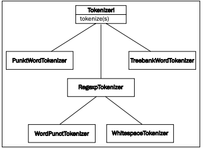

Tokenizing sentences into words
In this recipe, we'll split a sentence into individual words. The simple task of creating a list of words from a string is an essential part of all text processing.
How to do it...
Basic word tokenization is very simple; use the word_tokenize() function:
>>> from nltk.tokenize import word_tokenize
>>> word_tokenize('Hello World.')
['Hello', 'World', '.']
How it works...
The word_tokenize() function is a wrapper function that calls tokenize() on an instance of the TreebankWordTokenizer class. It's equivalent to the following code:
>>> from nltk.tokenize import TreebankWordTokenizer
>>> tokenizer = TreebankWordTokenizer()
>>> tokenizer.tokenize('Hello World.')
['Hello', 'World', '.']
It works by separating words using spaces and punctuation. And as you can see, it does not discard the punctuation, allowing you to decide what to do with it.
There's more...
Ignoring the obviously named WhitespaceTokenizer and SpaceTokenizer, there are two other word tokenizers worth looking at: PunktWordTokenizer and WordPunctTokenizer. These differ from TreebankWordTokenizer by how they handle punctuation and contractions, but they all inherit from TokenizerI. The inheritance tree looks like what's shown in the following diagram:
The TreebankWordTokenizer class uses conventions found in the Penn Treebank corpus. This corpus is one of the most used corpora for natural language processing, and was created in the 1980s by annotating articles from the Wall Street Journal. We'll be using this later in Chapter 4, Part-of-speech Tagging, and Chapter 5, Extracting Chunks.
One of the tokenizer's most significant conventions is to separate contractions. For example, consider the following code:
>>> word_tokenize("can't")
['ca', "n't"]
If you find this convention unacceptable, then read on for alternatives, and see the next recipe for tokenizing with regular expressions.